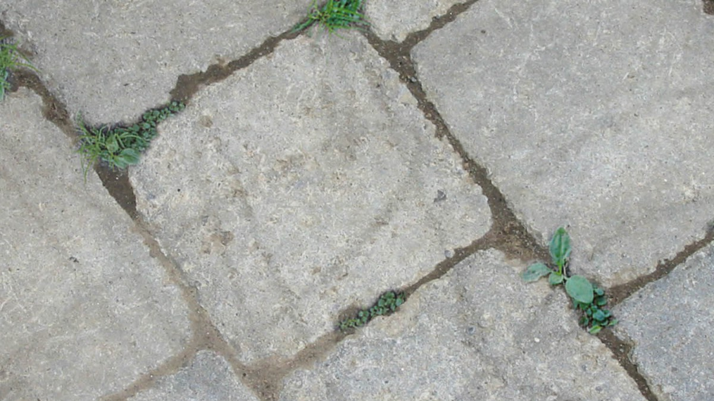
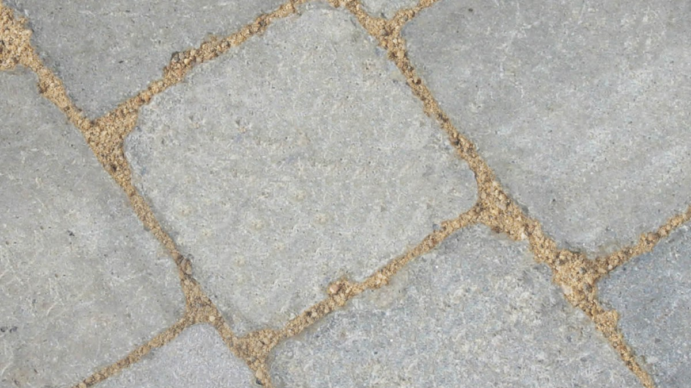
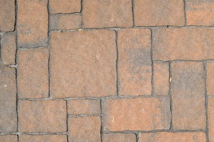

Which Sand is Best for Paver Joints?
|  |  |
BEFORE |
AFTER |
Sand is a crucial material in the installation of pavers. Sand is utilized twice during the installation process. Sand acts as a cushion the pavers and is also utilized for the paver joints to bind the stones together and prevent the growth of weeds. As a result, many homeowners become confused.
We’ve decided to breakdown the different types of sand you can choose, what their benefits are : Types of Sand Used for Pavers

Most people are familiar with the idea that stone pavers must be laid on top of a layer of sand. Ideally, this sand should be coarse and granular. When compacted, the edges will grind together, “locking” the layer of sand in place which helps to prevent erosion or movement. Concrete sand works very well, however mason sand is sometimes used as well.
Neither of these types of sand, however, are the best fit for filling in paver joints. A loose-fill sand will wash away over time, or when exposed to heavy rains. Because of this, polymeric sand for paver joints was developed to hold its form and to keep everything in place.
In recent years a newer type of sand for paver joints has been developed which softens upon becoming wet. Although it’s said that this allows for more flexibility, this can also cause problems with erosion and may require frequent reapplication of the sand.
Polymeric Sand Properties & Benefits
Polymeric sand is simply a granular sand material that is placed within the cracks and joints between stone pavers as a means of interlocking the units and preserving the beauty and integrity of the pavers.
A water-activated polymer is introduced to the sand. After applying the material to the paved surface, the sand is sprayed down with water which causes the polymers to harden. This then secures the sand in place. Polymeric sand is so durable that it can actually be power washed, with care.
As a result, the material won’t need replacing, even when exposed to extreme weather conditions. In addition to preventing the need for you to replace your joint filler after a rainstorm, the durability of polymeric sand ensures that water will be unable to seep beneath the paving stones.
This significantly reduces the chance of your pavers migrating, and stops water from washing away the base layer of sand which could cause the paving stones to sink. Polymeric sand will keep your pavers looking great for years to come.
thank you doug & fran
Author: Josh Braen
Licensed and Insured
NJ Contractors Lic # 13VH03803600
| Our Service Area: | ||
| 07470 wayne nj | 07508 north haledon nj | 07444 pompton plains nj |
| 07474 wayne nj | 07538 haledon nj | 07456 ringwood nj |
| 07477 wayne nj | 07508 haledon nj | 07511 totowa nj |
| 07405 kinnelon nj | 07420 haskell nj | 07512 totowa nj |
| 07058 pinebrook nj | 07035 lincoln park nj | 07082 towaco nj |
| 07424 west paterson nj | 07424 little falls nj | 07465 wanaque nj |
| 07403 bloomingdale nj | 07045 montville nj | 07457 riverdale nj |
| 07405 butler nj | 07436 oakland nj |
|
| 07004 fairfield nj | 07440 pequannock nj |
|
| 07417 franklin lakes nj | 07442 pompton lakes nj |